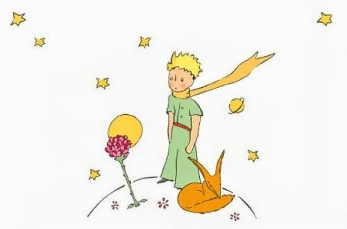

To create a bond is to make yourself vulnerable. The Fox teaches us that before we connect with someone, they are just an ordinary person indistinguishable from a crowd. However, investing your time, care, and emotional energy transforms them into an irreplaceable part of your life.
Avoid treating your social circles as mere transactions. Instead, recognize them as relationships built on deliberate attention. It is the time you dedicate to your rose that makes her deeply vital to you.